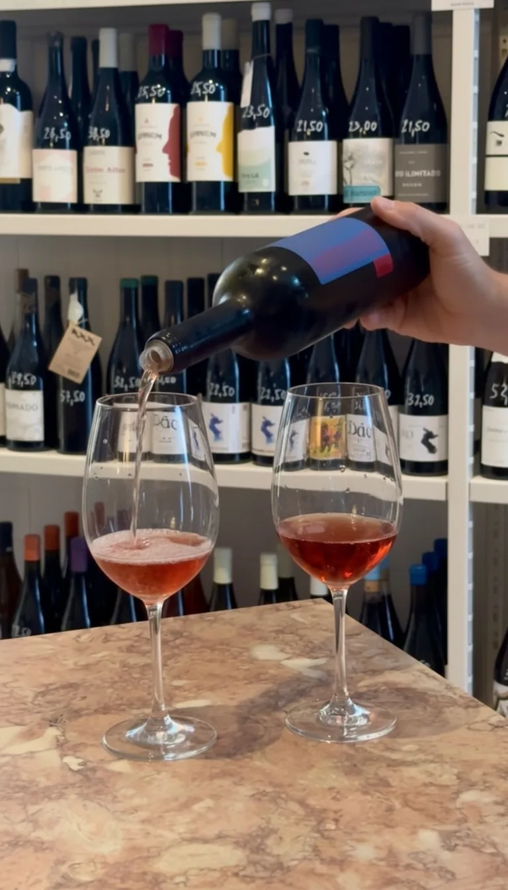
Lisbon · Evening
Graça & Anjos After Dark
Four handpicked stops through Lisbon's most characterful neighbourhoods. Neighbourhood wine bars, honest petiscos, good conversation. The kind of evening you cannot plan on your own.
Private wine experiences · Portugal
What is Via Vinho?
Via Vinho is not a tour company.
It is a private wine experience company, connected to the producers, estates, and winemakers across Portugal that most visitors never encounter. The kind of access that doesn't advertise.
Built on years of direct relationships with winemakers across Lisbon, the Setúbal Peninsula, and Portugal's Atlantic coast. Every experience shaped around what's genuinely worth your time.
Private from the first pour. Fully hosted from start to finish. Designed around the people, the place, and the wine.
Every Experience Includes
Your group only — small private groups
All estate visits and tastings included
Regional food and meals throughout the day
Hosted by Nicola or a regional specialist throughout
Private transport from central Lisbon
Discounts on wine purchases at selected estates
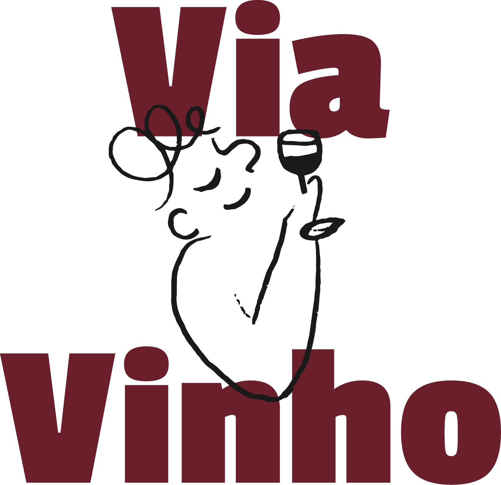
Private wine days across Lisbon, the Setúbal Peninsula, and Portugal's Atlantic wine regions. From neighbourhood wine walks to full-day estate experiences — transport, tastings, meals, and hosting, all in.

Lisbon · Evening
Four handpicked stops through Lisbon's most characterful neighbourhoods. Neighbourhood wine bars, honest petiscos, good conversation. The kind of evening you cannot plan on your own.
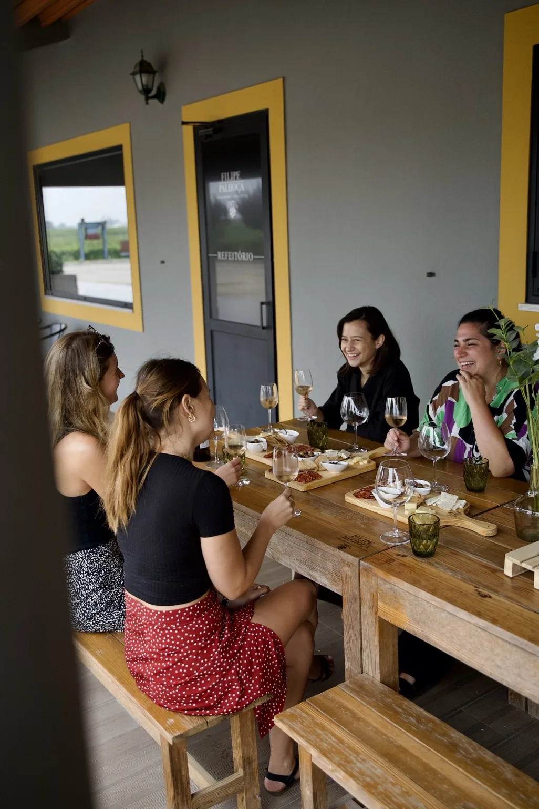
Setúbal Peninsula · Half Day
An afternoon in one of Portugal's most underrated wine regions. A family estate, unhurried tastings, and the story behind the Setúbal Peninsula's quietly extraordinary wines.
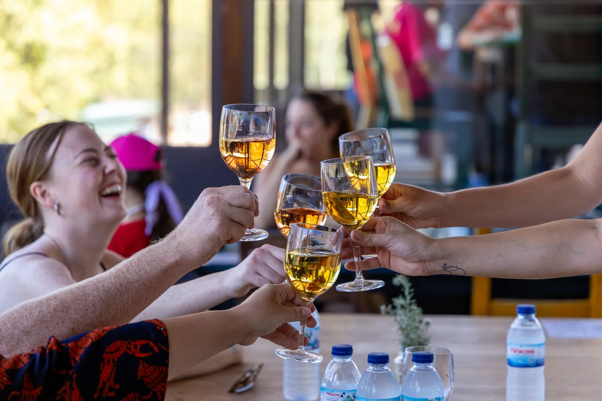
Setúbal Peninsula · Full Day
Two private estate visits, a long lunch with regional cuisine, and a proper introduction to the wines that have shaped the Setúbal Peninsula for centuries. Far from the crowds.
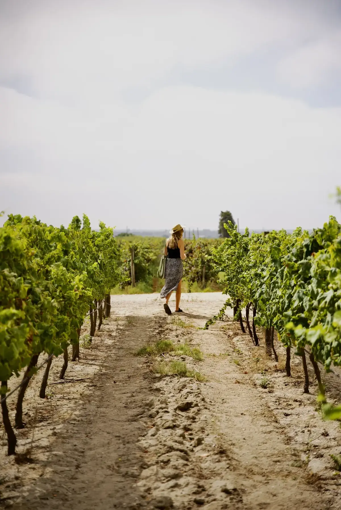
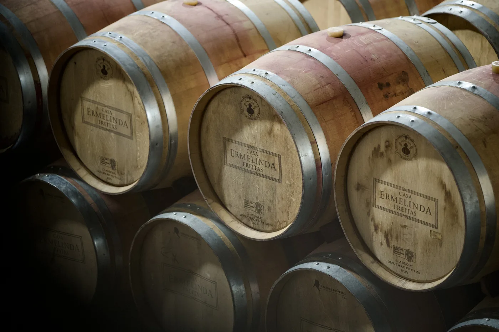
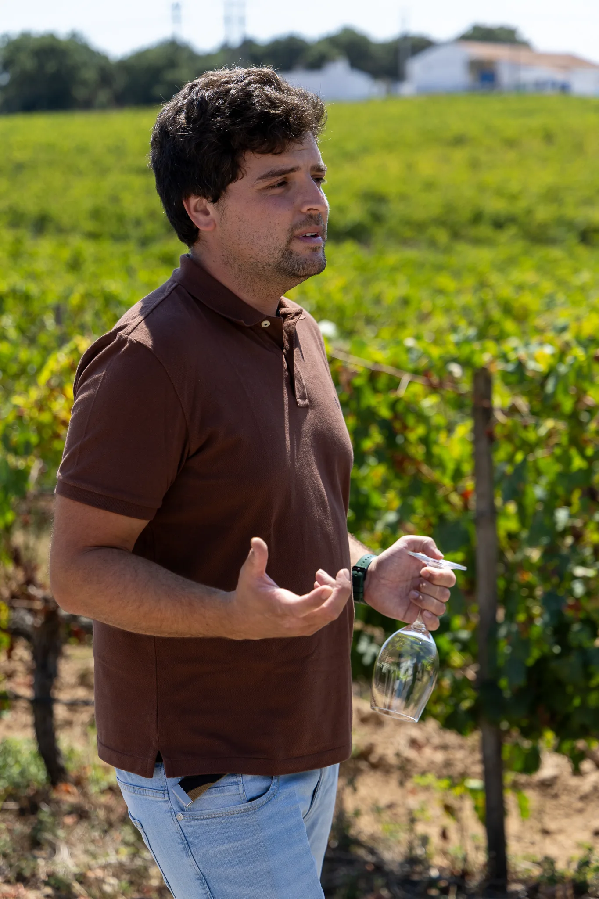
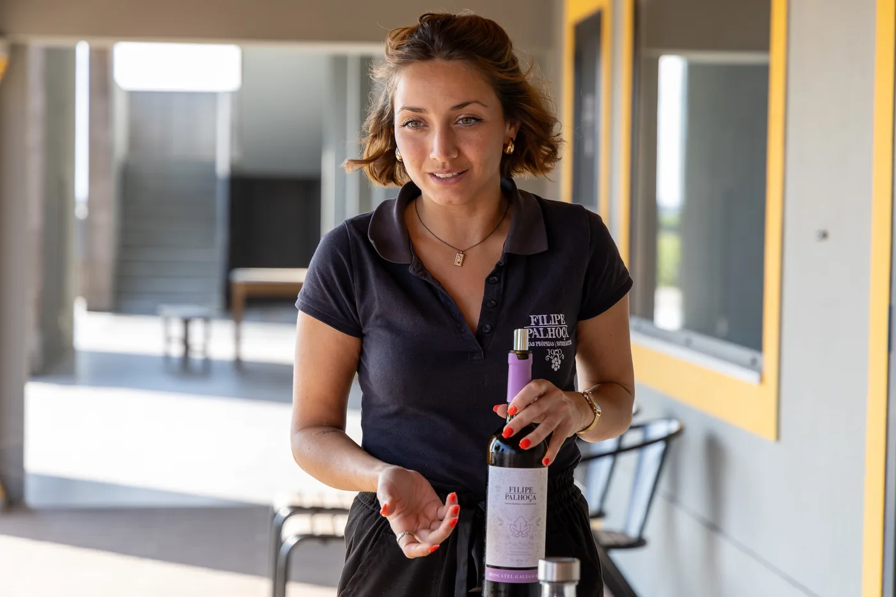
Via Vinho Reserve
Rare access to private estates, leading winemakers, and experiences shaped around relationships rather than routes. Built one at a time, in close conversation with the people who make them possible.
Fewer experiences. More access.
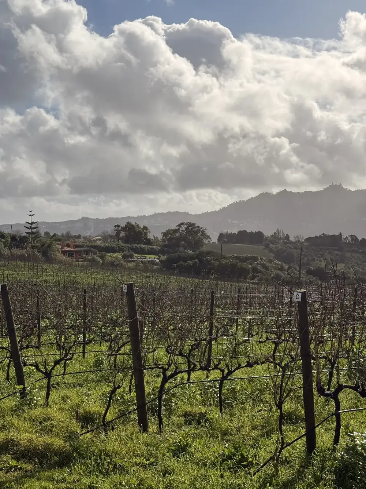
Colares · Atlantic Coast
Ungrafted vines on Atlantic sand, some of the oldest surviving in Europe. A wine region that operates on its own terms and produces wines like nothing else in Portugal. The right context makes all the difference.
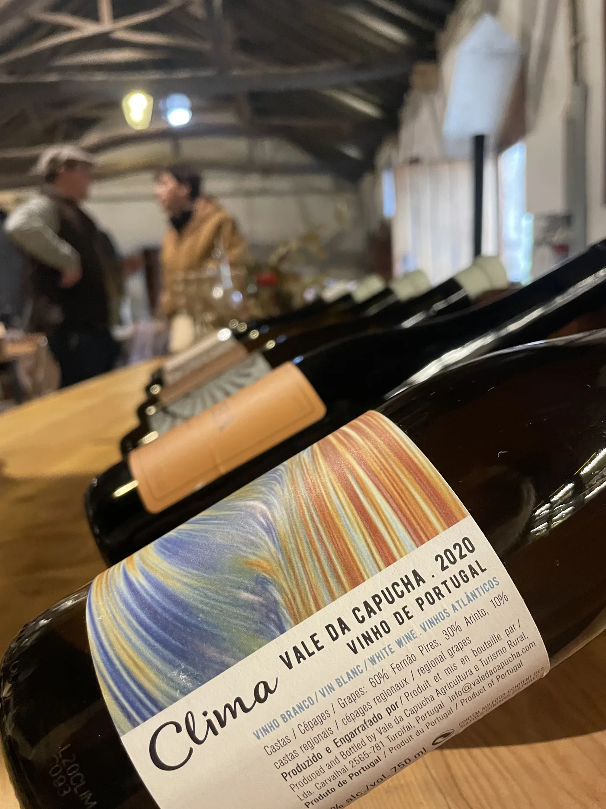
Torres Vedras
A full day among the Atlantic wine producers of Torres Vedras, near Lisbon. Two estates, a long lunch with seasonal Portuguese cuisine, and wines that taste like the coast they come from.
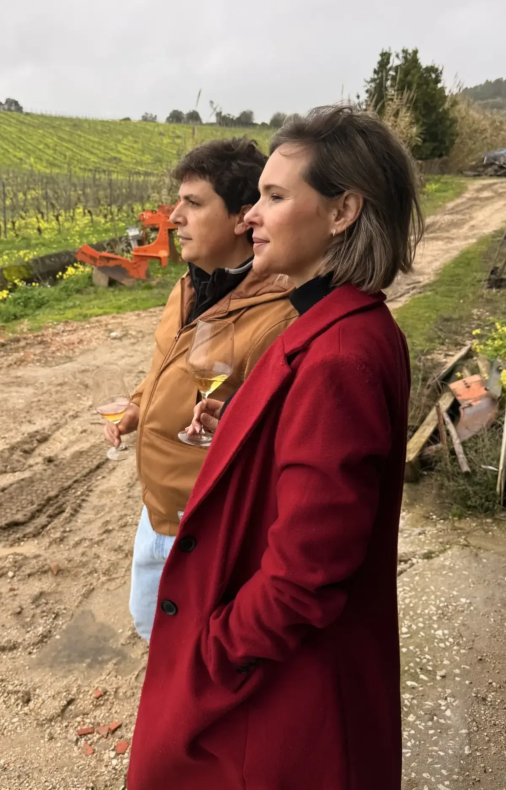
Portugal · Multi-day
Multi-day programmes, private estate access, and exclusive tastings with Portugal's most respected winemakers. Every detail shaped around your interests, pace, and the level of access you're after.
Your host
Founder · Via Vinho
Via Vinho started from a simple conviction: the producers, estates, and wine experiences that make Portugal worth understanding are mostly invisible to visitors. Not because they're hidden. Just because nobody's offered a proper introduction. Everyone who comes here curious deserves one. That's what I hope you'll discover.
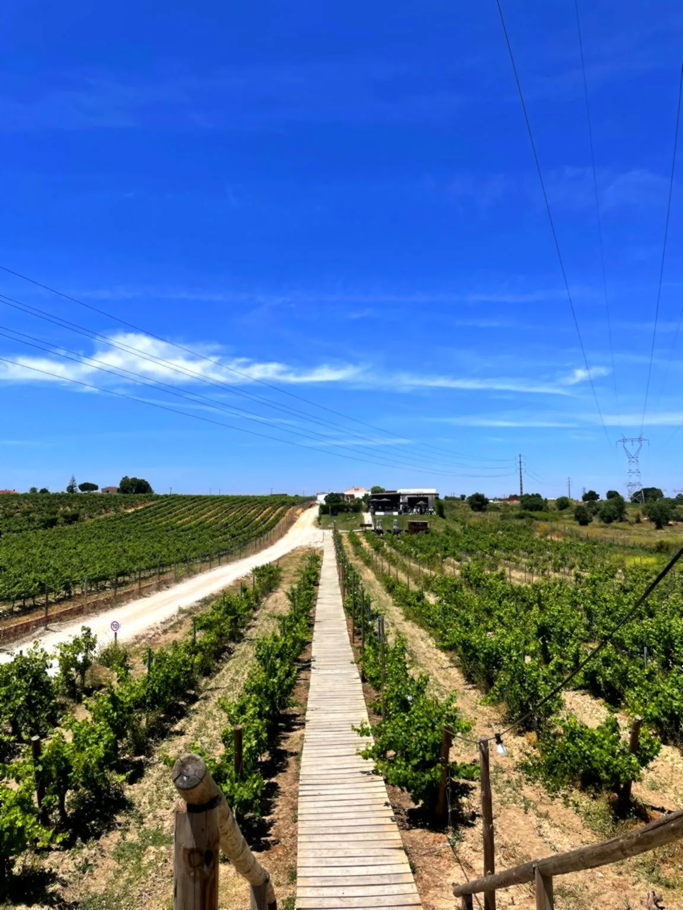
"It was one of the most unique and fun experiences I've had in Lisbon so far. I definitely recommend this to anyone wanting to spend an amazing time with some friends while enjoying incredible wine in beautiful locations."
Laura Solis · Portugal
The region, the pace, the kind of day you're looking for — we'll take it from there.